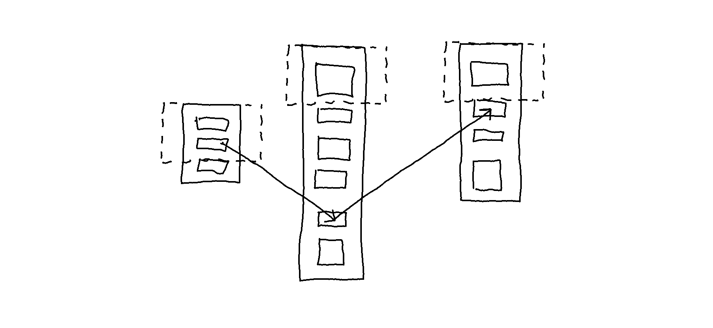
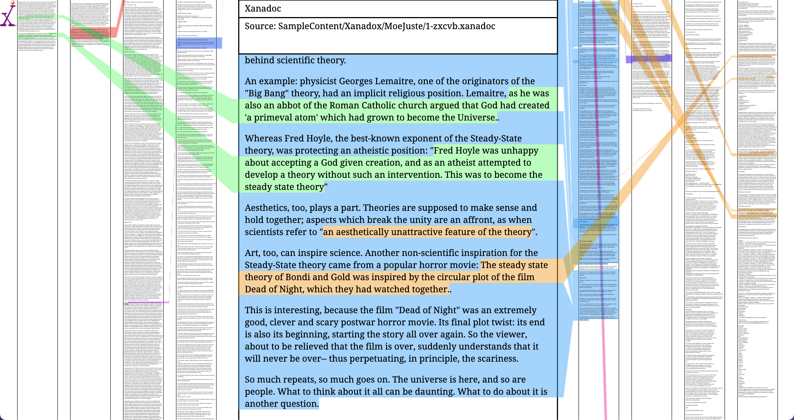

Background: Documents and Interconnection
The first section of this entry introduces the concept of interconnection, the various terms used to express the idea of interconnection across fields, and the underlying philosophical position.
The second section examines prominent document systems comprising concepts for mapping the interconnective structure of documents. Those concepts are juxtaposed to how they have been implemented in commonly known systems, such as how hypertext is implemented on the web. The biases and conventions inherited from paper documents are also discussed, including the (dis)advantages of transferring these (or how these have been transferred) to the digital realm.
The aim is to gather insight into which features of the systems can be utilized, which is discussed in the third section. The motivation behind this approach resonates with what Mary Hopper stated in her introduction to the 1998 symposium Hypertext in Historical Context: Vannevar Bush and Ted Nelson Revisited:
Consider that there may be vast potentials in electronic media that we still haven’t implemented, and we may be in danger of missing some of the greatest potential in electronic media because we mistake some situational limitations in technical development or project management for impossibility. This is the grounds upon which I suggest that the past is of more than just historical interest. The past, and the pioneers who shaped the past, may hold many suggestions as to paths it might be valuable to explore in the future and advice on the most productive ways to go down those paths. (Hopper 1998)
- Documents and Interconnection
- Examination of Prominent Document Systems
- The Encyclopédie by Denis Diderot (1713 - 1784) and Jean d’Alembert (1717 - 1783)
- The work of Paul Otlet (1868 - 1944)
- The original hypertext project Xanadu by Ted Nelson (1937)
- Insights
1. Documents and Interconnection
The concept of interconnection here denotes the various connections among documents’ content items1. As Ted Nelson (1987) explains, connections can be internal or external to a document, stated implicitly or explicitly. For example, phrases such as “in the example given below” or “as defined previously” establish implicit internal connections. Explicit internal connections are content items that, by convention, take the form of a footnote — the content of which can be a commentary on an idea, clarification of a term, parenthetical information, and suchlike. Explicit external connections are inclusions of one document segment into another (what Nelson (1980) coined transclusions) or some other direct connection by way of reference (paraphrased content with a citation, for example). Interconnection thus implies multiple potential structures other than the content-item-by-content-item sequence in a document (or, in conventional terms, the paragraph-by-paragraph sequence).
Other terms express similar notions about the various connections between documents. As Borgman (2015) writes, “[t]he body of relationships among documents is sometimes known as ‘hypertextuality.’” Hypertext is commonly associated with how it has been implemented on the web, understood in general terms as “a computer construct of links and data corresponding to files or parts of files that can be displayed in windows of various dimensions (Vandendorpe 2009).” Another term, used particularly within semiotics and literary theory, is intertextuality which describes abstract connections “as in the influence of one text on the meaning of another” (Borgman 2015). One such connection can be how one text is derived from a preceding text, as with Ulysses by James Joyce, which is a transformation of Odyssey by Homer (Vandendorpe 2009). In the definition of an intertext as it was first proposed, there is an emphasis on the perception of the reader, namely that the connections between one text and one that preceded or followed it results from the activity of reading (Vanderndorpe 2009). Ted Nelson (2015) calls it intertwingularity which “expresses a philosophical position about cross-connection,” namely that “all subjects and issues are intertwined and intermingled.”
Hypertextuality, intertextuality, and intertwingularity coincide but not completely. These terms are similar yet different lenses (used within particular fields) to express the idea that
documents do not stand alone, even if they look like independent objects. Rather, they are deeply connected to many other objects. (Borgman 2015)
Interconnection is a general term chosen and used to encompass these various connections between documents that ultimately result in complex layers of information. These connections can be established through reading and writing but also computational methods, such as applying natural language processing techniques for classifying text and keyword extraction. In the next section, prominent analog and digital document systems.
2. Examination of Prominent Document Systems
In what follows, three document systems are examined to gather insight into which features can be utilized to create an interactive prototype of a digital document system for mapping and accessing the interconnective structure of documents.
- The Encyclopédie by Denis Diderot (1713-84) and Jean d’Alembert (1717-83)
- The work of Paul Otlet (1868-1944)
- The original hypertext project Xanadu by Ted Nelson (1937)
All three are considered influential in the evolution of information technologies. The encyclopedia by Diderot and d’Alembert is exemplary of the eighteenth century; the work of Otlet is exemplary of the nineteenth century; and Xanadu by Nelson of the twentieth century. All are grounded in particular notions about the structure of ideas and how knowledge evolves, reflected particularly in the conceptualization of documents as modular — made up of parts connected to other parts through some link mechanism.
1 The Encyclopédie by Denis Diderot (1713-84) and Jean d’Alembert (1717-83)
Various information technologies for mapping the interconnective structure, allowing access through (non-)hierarchical renditions of contents, were produced in the eighteenth century, ranging from atlases, encyclopedias, dictionaries, and suchlike.
Published between 1751 and 1772, the encyclopedia by Diderot and d’Alembert was, as Rosenberg (2015) argues, an innovative system for its time, utilizing textual and diagrammatic ways of mapping multiple structures.
In its entirety, their encyclopedia is a system of intraconnections — which is to say, a closed system of internal connections — “comprising 28 volumes, 72,000 articles by over 2,000 writers, and more than 3,000 plates” (Rosenberg 2015). Though the design incorporates concepts for representing external connections, their encyclopedia was conceived and meant to be used as an independent system. A significant feature is the multiple renditions of the contents, offering multiple entry points to the articles. One structure is the alphabetical structure, embedded as running heads throughout the volumes (seen in the image below), allowing access to content by keyword.
Image source: Internet Archive
Other structures are the various diagrams, offering different renditions of the contents, such as the tree diagram from the first volume seen in the image below, functioning as a visual index.

Image source: Internet Archive
These textual and diagrammatic ways of mapping structures are hierarchical, as was the convention at the time. However, as Rosenberg explains:
Older encyclopedias were generally organized hierarchically and by subject. Theirs was designed to be navigated by keyword, to allow readers to enter and exit at any useful point. Additionally, their encyclopedia was hypertexted. Articles were linked in a web through a system of renvois or cross-references. The Encyclopédie also offered a hierarchical subject map, echoing the structure of older works, but, in the work of Diderot and d’Alembert, the tree of knowledge was presented as only one of several heuristics. (Rosenberg 2015)
The other structure — the implementation of cross-references — is a system of internal connections linking articles together. Within this system, there are two types of internal connections. The first type of connection is recommendations for further reading on related subjects and topics, linking together, as Diderot put it, “…Dialectics to Metaphysics; Metaphysics to Theology; Theology to Jurisprudence; Jurisprudence to History; History to Geography and Chronology […]” (Curran 2019) and so on. The second type of connection “put contradictory articles into dialogue,” for example, the article Freedom of Thought is linked to Diderot’s article Intolerance (of the Christian Church), inviting the “reader to cultivate a critical viewpoint” (Curran 2019). As the computer-generated diagram (seen in the image below) further elucidates, implicit in the system of internal connections is an underlying network structure.
Diagram by Olsen and Blanchard (Image source: Rosenberg (2015))
Additionally, the diagram elucidates that conceiving knowledge as fundamentally hierarchical is not “paradigmatic of Enlightenment epistemology,” nor is it intrinsic to print (Rosenberg 2015). Rather, all subjects are interconnected, and as Rosenberg argues, though the
network diagram would not have been familiar to the generation of the Encyclopedists, the concepts behind it were. They too were thinking about intellectual phenomena in terms of underlying structures and aggregate relationships. (Rosenberg 2015)
2 The work of Paul Otlet (1868-1944)
The work of Paul Otlet — regarded as a pioneer of the field once called documentation that branched into what is now called information science (Le Deuff and Perret 2019) — developed new approaches to organizing and accessing information by devising models2 and establishing theoretical principles of information. Otlet also explored how information organization might be in the future (once media other than the book would take precedence) in the form of metaphorical illustrations of a global network of documents (Heuvel and Rayward 2011).
Similar to the Encyclopédie — a project that is seen as in response to the eighteenth-century information overload (Rosenberg 2015) — Otlet’s work was in response to the nineteenth-century problem of “the enormous growth in the number of publications, specialist congresses, and international exhibitions” (Manfroid 2013). The problem that Otlet analyzed and explored solutions to was “how most effectively to create, maintain, and change institutional arrangements for collecting, storing, preserving, organizing, retrieving, and disseminating all of the recorded information that is — or will be — needed within society” (Rayward 1994). With that complex problem at hand, Otlet envisioned new approaches to storing, organizing, and disseminating information.
Otlet conceptualized documents as modular — made up of parts connected to other parts. An appropriate system, according to Otlet, must therefore allow and facilitate establishing links between these parts (i.e., content items). In designing such a system, Otlet explored the re-conceptualization of the Book as a global system of documents. As told by Heuvel and Rayward:
In a 1911 lecture on the future of the book and of bibliography, Otlet came back to the idea he had first expressed in 1892 and in subsequent publications: ‘The arbitrary division into lines and pages of the book in its present format, does not at all correspond all with the presentation of ideas’ (p. 291). He envisioned the emergence of a future format of the book in which ‘each intellectual element, in corresponding to a physical element, will create a structure such that any combination of ideas, notions, and facts will be possible.’ He suggested that this process can operate in so mechanical a fashion that in the future, the book will truly become a machine to think with (Otlet in Heuvel and Rayward (2011))
As the illustrations below suggest, for Otlet, the development of such a system entails ripping content items (representing ideas, notions, facts) from books and collecting each on separate paper cards.
Global Network of Universal Documentation (Image source: Heuvel and Rayward (2011))
The illustration below expresses a similar notion about how knowledge evolves.

Title and Source
%%find source%%
Otlet conceived knowledge as a process of decomposition and recomposition (analysis and synthesis). A document system must facilitate this continuous process by accommodating expansive growth and extensive reuse. One of his explorations includes a paper card-based system (seen in the image below) in which multiple links can be established to and from a card.
Multidimensional card system (Image source: Heuvel and Rayward (2011))
Connections between content items could be established through links and metadata. As Otlet writes:
To increase the number of sides, one might well abandon the rectangular form of the card and adopt a polygonal form, an octagon for example. For sorting and systematically selecting the ideas that have been classified hierarchically, the cards are suspended from their centre. The Book as a structure of cards thus takes a quasi-circular form and can rotate. [I]ts structure […] constitutes a Book […] that has abandoned the traditional form of linear text arranged according to a unique plan. It has been transformed in some way into a body with several dimensions, as many dimensions as headings such that different searches using the same graphic elements on the cards are possible. (Otlet in Heuvel and Rayward (2011))
As Heuvel and Rayward (2011) point out, the material manifestation of such a paper card system is “impractical for many reasons.” However, what Otlet describes is an open system in which many (types of) connections to and from the same content item (card) can be established through a link mechanism, forming an interconnective structure of documents. Beyond these experiments with paper cards, Otlet envisioned new visual representations of knowledge as a process of decomposition and recomposition. For example, as seen in the image below, “Otlet uses the architectural metaphor of the factory to visualize this process” (Heuvel 2017).

Laboratorium Mundaneum (Image source: Wikimedia Commons)
{kind=link}
Though the material constraints of paper-based technologies inhibited Otlet (e.g., books, paper cards, shelves, cabinets, and desks), he envisioned new ways of organizing and accessing information beyond what Adriaan van der Weel (2012) calls the order of the book.3
3 The original hypertext project Xanadu by Ted Nelson (1937)
Nelson is most known for inventing the back button, and developing concepts such as hypertext, virtuality, and the docuverse. Hypertext is likely the most known but is merely one of the many concepts Nelson has spent decades developing within a larger project called Xanadu. Though Xanadu has never been fully implemented, the many prototypes and writings throughout the decades since the 1960s have had a profound impact on the evolution of hypertext.4
Xanadu is a hypertext system, a docuverse, technically a piece of software that, since its conception, has been designed to run on a global network of computers in which every document is to reside (Ridi 2018). Much akin to the work of Otlet, Xanadu is based on particular notions about how knowledge evolves and the structure of ideas. As Nelson writes:
The physical universe is not all that decays. So do abstraction and categories. Human ideas, science, scholarship, and language constantly collapsing and unfolding. Any field, and the corpus of all fields, is a bundle of relationships subject to all kinds of twists, inversions, involutions, and rearrangements. (Nelson 1965)
According to Nelson, too, it is this continuous process that a system must be designed to accommodate by having the capacity for new categorization systems and any arrangements of old and new content. Further, on the structure of thoughts and ideas, Nelson writes:
[A]s you consider a thing, your thoughts crisscross it constantly, reviewing first one connection, then another. Each new idea is compared with many parts of the whole picture, or with some mental visualization of the whole picture itself. (Nelson 1987)
In line with the notion that the structure of ideas is nonsequential, in his book Literary Machines (first published in 1980), Nelson defines hypertext as “nonsequential writing—text that branches and allows choices to the reader” (Nelson 1987). Whereas writing and structuring sequential text entails choosing “one expository sequence from among the possible myriad,” writing nonsequential text entails deciding on the “interconnective structure” — “where to put things in the searchable maze” (Nelson 1987). It is based on these definitions and notions about how ideas and knowledge evolve that Nelson envisioned Xanadu.
Xanadu has gone through many revisions and different prototype implementations over six decades, but the core concepts have remained fundamentally the same. In what follows, those concepts are examined with reflections on some of the implementations and juxtaposed to how those concepts are implemented on the web.
Integrated History Management
Xanadu is a system that stores (and makes accessible) every change made to documents, integrated in such a way that former states can be retrieved and reworked (Nelson 1987). As seen in the image below, people can choose whether those changes are local/private or online/public.
Image source: Nelson (1987)
Once a document is online/public, any changes made (e.g., if the writer revises the content, or readers reuse parts of a document or create links to/from a document) are stored; effectively, the history of every document is accessible to anyone. This would be the same if the web were built with an integrated history management system such as Git, not as an optional tool but as a core feature.
Bidirectional Visual Links
The multidimensional structure of Xanadu is designed for two main types of connections between documents, expressed by the two link types content links and transclusions. All links are implemented as bidirectional visual links. Content links are the arbitrary connections people (writers and readers) create as they engage with text, and transclusions are reused content items. By convention, transclusions are what are known as excerpts and typographically distinguished as block quotes or inline quotes, and the link between the copied and the pasted is usually embedded as a citation. However, as Nelson writes:
Transclusion is what quotation, copying and cross-referencing merely attempt: they are ways that people have had to imitate transclusion, which is the true abstract relationship that paper cannot show. (Nelson 1999)
Content items are not duplicated; rather, transcluded — included in a document with a visual link to the original document. Since all links are bidirectional, every outward and inward-pointing link is accessible, which means the original document also points to documents that reuse parts of its contents. Transclusions offer a way to retrieve “the origins and context of quotations, excerpts and anthologized materials, and content transiting between versions” (Nelson 1999).
On a technical level, links are not embedded but implemented as an overlay, much akin to “a cache, or an alias on the desktop” (Nelson 1999), enabling multiple overlapping links to the same (part of a) document. Additionally, because all changes are stored, even if the original document undergoes changes, it is always possible to view the content item in its original context at the time it was transcluded.
In contrast, links on the web are embedded (in HTML) and only point outward. When a website is cited as a source in a text, it usually indicates the date the website was accessed. However, if the contents of the website have been deleted or changed since then, there is no way of accessing previous versions. Additionally, on the web, it is only possible to establish links at the document level (or page level)5 whereas, in Xanadu, link endpoints are at the level of the content item. As for how this would look and work, Nelson envisioned Xanadu as a system in which documents are viewed side-by-side with visual links, expressed by two concepts: parallel documents and transpointing windows (Nelson 1999).
 An improvement would be landing at the particular linked part of a document: 
Side-By-Side Documents With Visual Links
Parallel documents, according to Nelson:
are everywhere, but are not generally acknowledged. There are relatively few explicitly parallel documents (like Tom Stoppard’s play “Rosencrantz and Guildenstern Are Dead”, which is explicitly parallel to “Hamlet” – showing events that occur offstage in “Hamlet” and vice versa). But implicitly parallel documents are everywhere – the parallelism of commentaries, the parallelism of long and short versions of reports, the parallelism of translations, the parallelism of holy books. (Nelson 1998)
Thus documents should be viewed side-by-side with transpointing windows to:
support analysis and detailed understanding – by parallel commentary, precise annotation and the explication of contents; by the facilitation of pinpoint controversy. These are needed not just in scholarship, but legislation, diplomacy, and anywhere that interrelated documents need to be seen[…for] detailed explication, commentary or disagreement[, and for] comparing successive versions of a document. (Nelson 1999)
A prototype from 2003, in which the links are solid lines pointing to and from content items within windows, is seen in the image below.6
 Image source: Nelson (2015)
Image source: Nelson (2015)
In another prototype, the links are applied not as solid lines but as color-coded highlights. Additionally, the main document is in the middle, and the linked documents are on the left and right sides with a smaller font size.
 Screenshot of Xanadoc (try the interactive demo here)
In the latest Xanadu prototype, which is in 3D,7 the linked documents appear on the sides when moving through the contents, or as Nelson puts it: “all objects sworfing (swooping and/or morphing) together” (Nelson 2016).
Image source: Nelson (2016)
A demonstration of sworfing is given by Nelson in the video below.8
These implementations elucidate that creating multiple overlapping transclusions and content links results in complex (visual) information. Whereas Otlet’s experiments with paper cards are impractical in terms of implementation because of material constraints, the problem of mapping the interconnective structure in the digital realm has to do with how to visualize and interact with the resulting complex information. This has been a central concern for decades, as Conklin (1987) suggested in his analysis of hypertext systems in the 1980s. Referring to the image below, titled Tangled web of links, he writes:
This experimental implementation of a global map in the intermedia system shows the difficulty of providing users with spatial cues once a linked corpus contains more than a few dozen documents. This global map only represents about one tenth of the documents in a corpus[.] Conklin (1987)
 Image source: Conklin (1987)
Image source: Conklin (1987)
Nelson refers to it as the framing problem, to which he notes that “filtering links is a key aspect of front-end design [which] is a separate study in itself” (Nelson 1987).9
Image source: Nelson (1987)
3. Insights
Distilled from these examples, an interactive prototype of a digital document system (henceforth Nexae) will be developed based on the following conditions:
- Documents are modular.
- There must be multiple renditions.
- Links are to be developed by distinguishing them according to types of connections.
1. Documents are modular.
The structure of ideas is multi-sequential, and knowledge is not fundamentally hierarchical. Knowledge is a process of decomposition and recomposition (analysis and synthesis). To realize the interconnective structure of documents and to facilitate the continuous process of decomposition and recomposition, Nexae will be developed based on the conception that documents are modular. Modularity implies the possibility for:
- a link to point to an entire document or a particular content item within a document,
- a content item existing in multiple documents,
- overlapping links, and
- the possibility for documents to be organized according to (and belong to) multiple categories.
2. There must be multiple renditions.
Significant to the design of the Encyclopédie is that there are multiple entry points through textual and visual renditions of its contents, which can be implemented as different view modes in the digital document system. The computer-generated diagram, elucidating the underlying network structure of connections within the Encyclopédie, is deemed particularly useful for gaining an infographic-like overview of the number of connections between documents belonging to different categories.
There must be multiple renditions to convey different information about the interconnective structure, whether that be different representations of documents or arrangements, both hierarchical and non-hierarchical. Each view mode will be developed to offer different perspectives on documents at different levels of detail (e.g., view mode A at the document collection level, view mode B at the level of document selection, and view mode C at the level of content items).
3. Links are to be developed by distinguishing them according to types of connections.
Xanadu is a system with two link types: transclusions and content links. These two link types are based on distinguishing between arbitrary conceptual connections and those created when content is reused in another document. Importantly, unlike the convention of inserting reused content between quotation marks, transclusion also encompasses connections between content transiting different versions. For example, two drafts will have shared content items, and these are also transclusions. Transclusions enable content to be inserted from one document into another, keeping track and providing direct access to its original context, which relies on bidirectional links. The development of links will be based on distinguishing transclusions and non-transclusions. Adopting the concept of transcluding content means abandoning the concept of copying and pasting. Additionally, distinguishing links will involve exploring the visual form of links, how to indicate the link direction, and how to provide direct access to linked documents through interaction, whether by viewing documents side-by-side or some other means.
The next entry involves the concept design of the digital document system.
Sources
Borgman CL. Data, Metadata, and Ted. In: Dechow DR, Struppa DC, editors. Intertwingled. Cham: Springer International Publishing; 2015. p. 67–74.
Curran A. How Diderot’s Encyclopedia Challenged the King [Internet]. Longreads. 2019. Available from: https://longreads.com/2019/01/30/how-diderots-encyclopedia-challenged-the-king/
DeRose SJ. What Is Text, Really? Journal of Computing in Higher Education. 1990;1(2):3–26.
Le Deuff O, Perret A. Hyperdocumentation: origin and evolution of a concept. JD. 2019;75(6):1463–74.
Heuvel C van den. Building Society, Constructing Knowledge, Weaving the Web: Otlet’s Visualizations of a Global Information Society and His Concept of a Universal Civilization. In: Rayward WB, editor. European Modernism and the Information Society: Informing the Present, Understanding the Past. 1st ed. Routledge; 2017
Heuvel C van den, Rayward WB. Facing interfaces: Paul Otlet’s visualizations of data integration. J. Am. Soc. Inf. Sci. 2011;62(12):2313–26.
Hopper M. Vannevar Bush and Ted Nelson Revisited. Hypertext in Historical Context [Internet]. MIT Media Lab; 1998. Available from: http://web.mit.edu/m-i-t/forums/hypertext/hypertext.htm#missing
Manfroid S, Gillen J, Phillips-Batoma PM. The Archives of Paul Otlet: Between Appreciation and Rediscovery, 1944–2013. Library Trends. 2013;62(2):311–28.
Nelson TH. A File Structure for the Complex, the 134 Changing and the Indeterminate. 1965;13.
Nelson TH. Computer Lib Dream Machines. 1974.
Nelson TH. Literary Machines: The report on, and of, Project Xanadu concerning word processing, electronic publishing, hypertext, thinkertoys, tomorrow’s intellectual revolution, and certain other topics including knowledge, education and freedom. 87.1. Sausalito, California: Mindful Press; 1987.
Nelson TH. Xanalogical Structure, Needed Now More than Ever: Parallel Documents, Deep Links to Content, Deep Versioning, and Deep Re-Use. ACM Computing Surveys. 1999;31(4):32.
photonhunter. Ted Nelson on Zigzag data structures [Internet]. 2008 [cited 2021 October 30]. Available from: https://www.youtube.com/watch?v=WEj9vqVvHPc
Nelson TH. What Box? In: Dechow DR, Struppa DC, editors. Intertwingled. Cham: Springer International Publishing; 2015. p. 133–50.
Nelson TH. The Xanadu Universe [Internet]. 2016 [cited 2021 Oct 28]. Available from: https://xanadu.com/xUniverse-D6
Rayward WB. Visions of Xanadu: Paul Otlet (1868–1944) and Hypertext. Journal of the American Society for Information Science. 1994;16.
Ridi R. Hypertext. Knowledge Organization. 2018;45(5):393–424.
Rosenberg D. History Debugged. In: Dechow DR, Struppa DC, editors. Intertwingled. Cham: Springer International Publishing; 2015. p. 91–103.
Van der Weel A. Changing Our Textual Minds: Towards a Digital Order of Knowledge. Manchester University Press; 2012.
Endnotes
Content items are what Steven DeRose (1990) calls “content objects,” what Charles van den Heuvel and W. Boyd Rayward (2011) call “information chunks,” and what Ridi (2018) calls “information units.” In conventional terms, a paragraph, for example, is a content item; a quote within a paragraph is also a content item; a list and a list item are content items. ↩
One example is Otlet’s model, Functional Requirements for Bibliographic Records, in which entities are linked on multiple levels in the form of a network (Borgman 2015). With this model, Otlet proposed to restructure the library catalog databases based on the conceptual structure of information resources. ↩
As stated in [Questions That Follow], the order of the book is the presentation and structure of text based on the form of books and defined by the format of manuscript and print. ↩
As acknowledged by Tim Berners-Lee, Xanadu influenced the development of the web (Ridi 2018). ↩
Traversing content on the web by selecting hyperlinks commonly entails blindly jumping and landing at the top of the page. Even if a sentence references a particular part of another webpage, a link cannot point directly to it.10 ↩
Note that the link direction is unclear, and the position and overlap of the windows are not convenient. ↩
One problem with this 3D version is that there is no obvious way of navigating the space. For reading and editing a document, it could be useful to snap into a full-frame view of a particular part of a document. ↩
The idea of viewing documents side-by-side is solid, but having documents fly in and out of view as you move through the document is not. There should be an interaction step in which the content is only opened through deliberate action. ↩
a problem to which this research project aims to propose a solution. ↩
It is possible to use anchor links that point to a specific section of a webpage, but it relies on the creator applying an HTML id attribute to the section title (see Stack Overflow). ↩